Podcast · Folge 3Was die Werkstatt lehrt
Zwei Absolventinnen über den Weg von der Abschlussarbeit zum gedruckten Beitrag.
Hören und Sehen
Jeder Band bekommt Gespräche zum Schwerpunkt und zu den Rubriken. Vorträge des Islamologentags und offene Seminare werden aufgezeichnet. Alle Folgen bei Apple Podcasts, Spotify und als RSS, alle Videos auf dem Kanal des Instituts.

Neueste Folge
Zwei Absolventinnen über den Weg von der Abschlussarbeit zum gedruckten Beitrag, über Rückmeldungen, Gutachten und die Frage, wann ein Text fertig ist.

Podcast · Folge 3Zwei Absolventinnen über den Weg von der Abschlussarbeit zum gedruckten Beitrag.
Gespräch über die Rubrik Quellen und Fächer und ihre Methode.
Die Schriftleitung über die Idee, den Leitsatz und das erste Jahr.
Vortrag vom Islamologentag 2026 mit Folien.
Aufzeichnung aus der Reihe Begegnung am Institut.
Aus dem Lehrgang Wissenschaftliches Arbeiten, offen für alle.
Rundbrief
Neue Beiträge, der Stand des Jahrbuchs, Termine des Islamologentags und der Seminare. Kein Werbepartner, keine Weitergabe der Adresse, Abmeldung mit einem Klick.